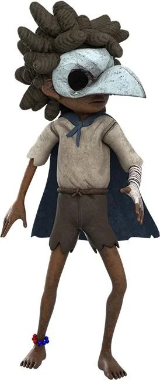
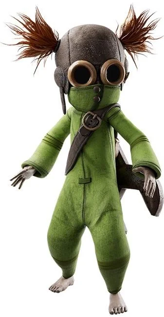
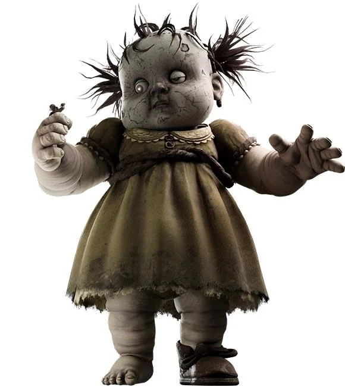
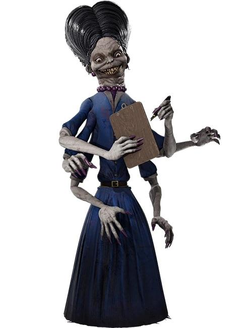
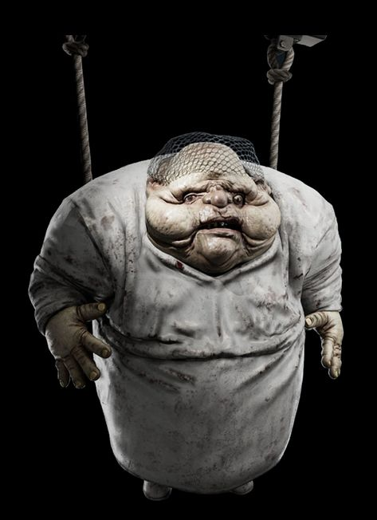
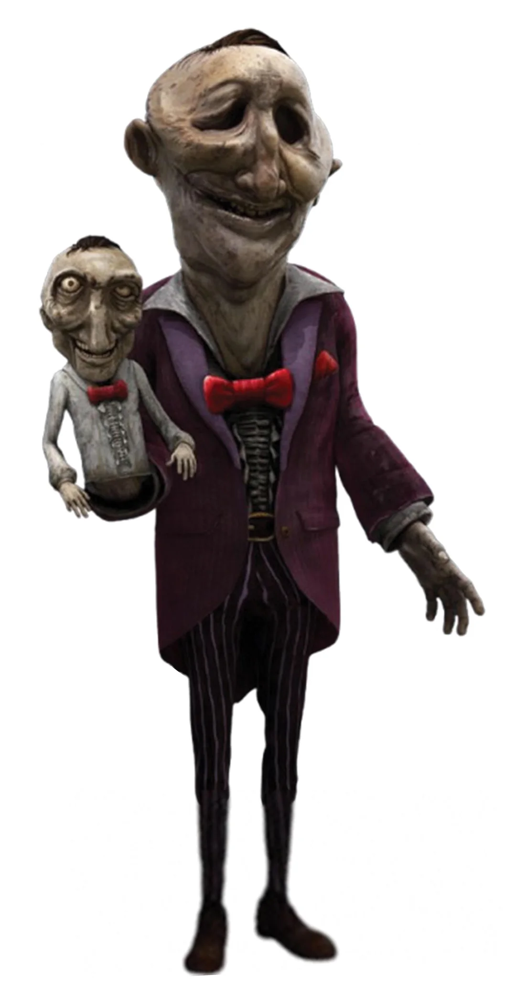
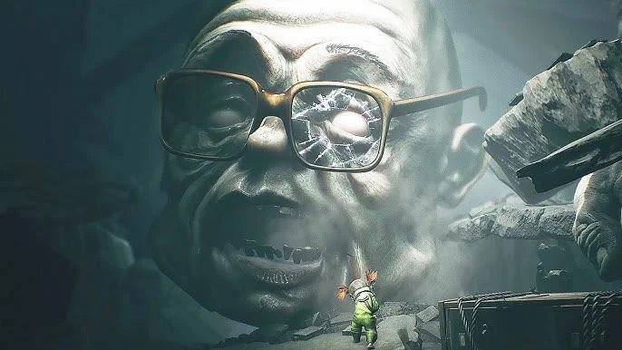

Um menino misterioso que usa uma máscara de médico da peste de pássaro e uma capa azul, hábil no uso do seu arco e flecha para atingir alvos distantes.

Uma garota determinada e pragmática vestida com macacão verde e capacete de aviador, que carrega uma chave de fendas pesada para quebrar estruturas e avançar pelos cenários da Espiral.

Uma boneca bebê gigantesca e aterrorizante que habita a Necrópole, capaz de destruir o ambiente e petrificar o que vê com o seu olhar luminoso.

A governanta e supervisora da Fábrica de Doces, uma mulher alta e assustadora equipada com múltiplos braços para inspecionar e controlar tudo à sua volta.

Um funcionário obeso e deformado da fábrica que veste roupa de proteção industrial e fica suspenso por cabos enquanto realiza o trabalho braçal.

Uma figura grotesca, curvada e atarracada que vaga pelos ambientes decadentes do jogo, agindo como uma ameaça constante para a dupla.

O Dono do Circo (conhecido oficialmente como The Kin) é o principal antagonista do capítulo do Circo / Parque de Diversões (Carnevale) em Little Nightmares 3. Ele é uma figura monstruosa e decrepida que comanda o local ao lado de sua versão em miniatura (Mini-Kin). Durante o jogo, os protagonistas precisam usar de furtividade e estratégias para escapar dele e da sua atração aterrorizante.
